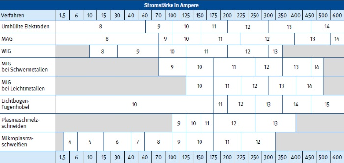
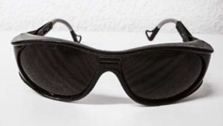

Bei den Lichtbogenverfahren wird durch Anlegen einer elektrischen Spannung die Luft zwischen Elektrode und Werkstück, die eigentlich ein schlechter elektrischer Leiter ist, ionisiert (elektrisch leitend). Es entsteht Plasma. Dieses Plasma ist mehrere tausend Grad heiß und sendet Strahlungen mit unterschiedlichen Wellenlängen aus. Neben dem sichtbaren Licht wird Infrarotstrahlung (IR-Strahlung) und ultraviolette Strahlung (UV-Strahlung) erzeugt.
Sichtbares Licht
Das sichtbare Licht führt zur Blendung und befindet sich im elektromagnetischen Spektrum im Wellenlängenbereich von 400 nm bis zu 750 nm.
Infrarotstrahlung
Die Infrarotstrahlung wird als Wärmestrahlung wahrgenommen und befindet sich im elektromagnetischen Spektrum im Wellenlängenbereich von 750 nm bis zu 1000 nm. Die menschliche Haut besitzt Thermorezeptoren, die die Wärme spüren und entsprechende Nervensignale an das Gehirn weitergeben. Kälteeinwirkung bewirkt im menschlichen Körper eine Verengung der Blutgefäße, Wärmeeinwirkung eine Erweiterung. Längere Einwirkung von IR-Strahlung auf der Haut kann zu Verbrennungen führen. Neben der Haut kann auch das Auge durch IR-Strahlung geschädigt werden. Kurzwellige IR-Strahlung kann bei lang-anhaltender Einwirkung zur Trübung der Augenlinse führen (Feuerstar), langwellige IR-Strahlung zur Verbrennung der Hornhaut.
Ultraviolette Strahlung
Für die ultraviolette Strahlung besitzt der menschliche Körper kein Sinnesorgan. Der menschliche Körper benötigt geringe Mengen an UV-Strahlung zur Bildung von Vitamin D. Zu hohe Dosen sind aber für den Menschen schädlich. UV-Strahlung verursacht u. a. das Verblitzen der Augen, indem sie eine Entzündung des äußeren Auges (Bindehautentzündung) hervorruft.
Auch weitere Auswirkungen der UV-Strahlung spürt der Mensch erst, wenn es zu spät ist. Kurzzeitige hohe Dosen von UV-Strahlung führen zu Sonnenbrand, beim Schweißen zum Beispiel zur sogenannten "Schweißerkrawatte" (der Verbrennung des nicht abgedeckten Bereichs zwischen Hemd und Gesichtsschutz). Langfristig zu hohe Dosen können zu Hautkrebs und grauem Star (Eintrübung der Augenlinse) führen.
Die UV-Strahlung befindet sich im Wellenlängenbereich von 100 nm bis 380 nm im elektromagnetischen Spektrum. Sie wird, in drei Kategorien unterteilt:
Im Schweißlichtbogen sind alle Anteile von UV-Strahlung enthalten. Die Strahlungsintensität ist abhängig vom Schweißverfahren, der Stromstärke und der Reflexion im Schweißbereich.
Schutzmaßnahmen
Um Haut- und Augenschäden zu vermeiden, muss der ganze Körper vor Strahlungseinwirkung geschützt sein.
Es wird ein Gesichtsschutz benötigt. Ein Schutzhelm für das Schweißen ist einem Schutzschild vorzuziehen, damit auch die Schläfen ausreichend abgedeckt werden. An diesem Schutzhelm sollten auch Abdeckungen für die Schädeldecke, den Nacken und den Hals befestigt sein. Alle Hautpartien, die nicht von der Schutzkleidung bedeckt sind, müssen z. B. bei Bedarf durch die Schutzhaube und unter Verwendung einer speziell für das Schweißen angefertigten UV-Hautschutzcreme geschützt werden. So sind die Personen an den Schweißarbeitsplätzen nicht nur gegen die Strahlung von benachbarten Arbeitsplätzen geschützt, sondern auch gegen Strahlung, die von den Wänden oder den Werkstücken reflektiert wird. Die richtige Schutzstufe der Augenschutzfilter muss in Abhängigkeit vom Schweißverfahren und von der Stromstärke gewählt werden.
Hierzu werden beim Lichtbogenschweißen Augenschutzgeräte nach DIN EN 175 mit Schutzfiltern nach DIN EN 169 verwendet. Diese Schutzfilter müssen in der Randzone eine dauerhafte Kennzeichnung tragen.
Beispiel 12 XY 1 DIN (Abb. 6-1)
Darin bedeuten:
| • | Zahl 12: | Schutzstufe 12; |
| • | Buchstaben XY: | Kurzzeichen der Herstellfirma; |
| • | Ziffer 1: | Brechwertklasse 1 (Optische Güte); |
| • | DIN: | DIN-Prüf- und Überwachungszeichen |
Abb. 6-1 Kennzeichnung eines Schweißschutzfilters entsprechend der Norm (Ausschnitt)
Schutzfilter für das Schweißen, die auch für Stoßbelastung geeignet sind und so auch als Sicherheitsscheibe fungieren, sind nach dem DIN-Zeichen zusätzlich mit dem Buchstaben "L" für Verbundwerkstoff oder "P" für Kunststoff gekennzeichnet. Vorsatzscheiben müssen mit dem Kurzzeichen der Herstellfirma und dem DIN-Zeichen gekennzeichnet sein.
Hinweise zur richtigen Anwendung der Schutzstufen bei den verschiedenen Lichtbogenschweißverfahren in Abhängigkeit von der Stromstärke gibt die aus DIN EN 169 Teil 1 wiedergegebene Tabelle (Tabelle 3).
Tabelle 3 Schutzstufen und empfohlene Verwendung bei Lichtbogenverfahren

Anmerkung: Die Bezeichnung "Schwermetalle" bezieht sich auf Stähle, legierte Stähle, Kupfer und seine Legierungen usw.
Beim Schweißen mit Langlichtbogen ist die nächsthöhere Schutzstufe zu verwenden. Soll die Erwärmung durch Absorption vermindert werden, sind verspiegelte Schweißschutzfilter zu verwenden. Bei Überkopfschweißarbeiten sind die Schweißschutzfilter durch eine Vorsatzscheibe zu schützen. Einscheibenglas kann beim Auftreffen heißer Metallspritzer zerspringen. Selbstverständlich müssen immer genügend Ersatzscheiben bereitgehalten werden. Wenn der Lichtbogen häufig gezündet werden muss, z. B. bei kurzen Nähten und Heftarbeiten, sind Schutzschirme mit Schutzfiltern nach DIN EN 379 zu empfehlen, die sich selbsttätig mit dem Zünden des Lichtbogens abdunkeln.

Abb. 6-2 Spezielle Brille für die helfende Person beim Schweißen mit Schutzfilter nach DIN EN 175 (geringere Schutzstufe)
Auch beim kurzzeitigen Heften von Werkstücken darf nicht auf die Benutzung der persönlichen Schutzausrüstung verzichtet werden. Die Schutzausrüstung ist ebenfalls für die beim Schweißen helfende Person notwendig, da diese, z. B. beim Fixieren von Bauteilen, belastet sein kann. Muss die helfende Person nicht direkt in den Lichtbogen sehen, kann sie einen Augenschutz mit geringerer Schutzstufe tragen, z. B. 1 bis 4 nach DIN EN 175 (Abb. 6-2).
Um Reflexionen und Blendungen für andere Beschäftigte zu minimieren, muss jeder Schweißarbeitsplatz z. B. mit Lamellenschutzvorhängen nach DIN EN ISO 25980 abgegrenzt werden. Diese Lamellenschutzvorhänge absorbieren die Strahlung weitgehend und bieten, je nach dem Grad der Einfärbung, die Möglichkeit des Sichtkontakts. Grundsätzlich gilt für Lamellenvorhänge: Je dunkler die Farbe, desto besser die Absorption der UV-Strahlung. Blechstellwände sollten nicht verwendet werden, da diese die UV-Strahlung stark reflektieren.
Bei ortsfesten Schweißarbeitsplätzen sollten die Wände nicht hellfarbig und glänzend sein. Gut geeignet sind rohe Ziegelwände. Über die Reflexionseigenschaften von Anstrichstoffen sind die Farbenhersteller zu befragen. Ungeeignet sind Kalkanstriche, weil sie die Strahlen stark reflektieren.
Rechtsverbindliche Regelungen zum Schutz der Beschäftigten gegen optische Strahlung sind in der "Verordnung zum Schutz der Beschäftigten vor Gefährdungen durch künstliche optische Strahlung" (OStrV) festgelegt.